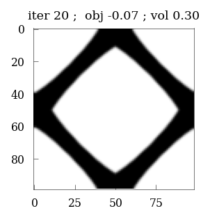
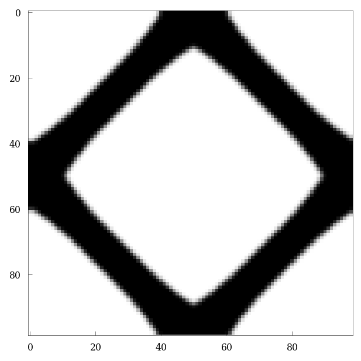

Topology optimization
import jax
jax.config.update(
"jax_compilation_cache_dir", "/cluster/scratch/mpundir/jax-cache-notebook"
)
import jax.numpy as jnp
jax.config.update("jax_enable_x64", True) # use double-precision
jax.config.update("jax_platforms", "cpu")
import numpy as np
import functools
from jax.typing import ArrayLike
from jax import Array
from tqdm.notebook import tqdm
import matplotlib.pyplot as plt
from skimage.morphology import disk, rectangle
import itertools
from matplotlib.gridspec import GridSpec
import sys
sys.path.append("../fft_helpers/")
from projection_operators import compute_Ghat_4_2
import tensor_operators as tensor
from custom_solvers import conjugate_gradient
sys.path.append("../plot_helpers/")
plt.style.use(["../plot_helpers/prl_paper.mplstyle"])
from plot_helper_for_paper import set_size, plot_imshow, plot_contourf
\[\begin{align*}
\underset{\rho}{ \text{maximize}} &:~ f(\rho, \boldsymbol{F}) \\
\text{s.t} &: ~\mathcal{F}^{-1} \{ \mathcal{F} \{ \mathbb{G} \} : \mathcal{F} \{ \sigma \} \} = 0~, \\
& : ~\int \rho(\boldsymbol{x}) d\Omega / \int d\Omega = \vartheta~, \\
& :~ 0 \leq \rho(\boldsymbol{x}) \leq 1 , \forall \boldsymbol{x} \in \Omega
\end{align*}\]
The implementation of Optimality criteria and sensitivity filter has been taken from the work of Chandrasekhar et al http://arxiv.org/abs/2104.01965
# %% Filter
# Reference: http://arxiv.org/abs/2104.01965
def compute_filter(rmin):
H = np.zeros((N * N, N * N))
for i1 in range(N):
for j1 in range(N):
e1 = (i1) * N + j1
imin = max(i1 - (np.ceil(rmin) - 1), 0.0)
imax = min(i1 + (np.ceil(rmin)), N)
for i2 in range(int(imin), int(imax)):
jmin = max(j1 - (np.ceil(rmin) - 1), 0.0)
jmax = min(j1 + (np.ceil(rmin)), N)
for j2 in range(int(jmin), int(jmax)):
e2 = i2 * N + j2
H[e1, e2] = max(
0.0, rmin - np.sqrt((i1 - i2) ** 2 + (j1 - j2) ** 2)
)
Hs = np.sum(H, 1)
return H, Hs
#length = 1.0
N = 99
# material parameters
elastic_modulus = {"max": 1.0, "min": 1e-3} # N/mm2
poisson_modulus = 0.3
penalty = 5.0
vf = 0.3
dx = dy = 1.0
length = dx*N
H, Hs = compute_filter(rmin=1.3)
ft = {"type": 2, "H": H, "Hs": Hs}
μ = elastic_modulus['max'] / (2 * (1 + poisson_modulus))
λ = poisson_modulus * elastic_modulus['max'] / ((1 + poisson_modulus) * (1 - 2 * poisson_modulus))
λ = 2*μ*λ/(λ + 2*μ) # for plane stress
K = λ + 2 * μ / 2
print(μ*K*vf/(2*μ+2*K-(K+2*μ)*vf))
Hmax = μ*K/(K+2*μ)
0.0470219435736677
μ
0.3846153846153846
trial = vf/(Hmax+ μ) + (1-vf)/Hmax
1/trial - Hmax
0.04702194357366771
ndim = 2
# identity tensor (single tensor)
i = jnp.eye(ndim)
# identity tensors (grid)
I = jnp.einsum("ij,xy", i, jnp.ones([N, N])) # 2nd order Identity tensor
I4 = jnp.einsum(
"ijkl,xy->ijklxy",
jnp.einsum("il,jk", i, i),
jnp.ones(
[
N,
]
* ndim
),
)
I4rt = jnp.einsum(
"ijkl,xy->ijklxy",
jnp.einsum("ik,jl", i, i),
jnp.ones(
[
N,
]
* ndim
),
)
I4s = (I4 + I4rt) / 2.0
II = tensor.dyad22(I, I)
I4d = I4s - II / 3.0
# (inverse) Fourier transform (for each tensor component in each direction)
@jax.jit
def fft(x):
return jnp.fft.fftshift(jnp.fft.fftn(jnp.fft.ifftshift(x), [N, N]))
@jax.jit
def ifft(x):
return jnp.fft.fftshift(jnp.fft.ifftn(jnp.fft.ifftshift(x), [N, N]))
Ghat4_2 = compute_Ghat_4_2(NN=(N,) * ndim, operator="rotated", length=length)
@jax.jit
def param(rho):
rho = rho.reshape(N, N)
E = (
elastic_modulus["min"]
+ (elastic_modulus["max"] - elastic_modulus["min"]) * (rho + 0.01) ** penalty
)
return E
# --------------------------#
# Reference: http://arxiv.org/abs/2104.01965
def get_initial_density(vf):
rho = vf * np.ones((N, N))
d = np.minimum(N, N) / 3.0
ctr = 0
for i in range(N):
for j in range(N):
r = np.sqrt((i - N / 2.0 - 0.5) ** 2 + (j - N / 2.0 - 0.5) ** 2)
if r < d:
rho[j, i] = vf / 2.0
ctr += 1
rho = rho.reshape(-1)
return rho
# Reference: http://arxiv.org/abs/2104.01965
def apply_sensitivity_filter(ft, x, dc, dv):
if ft["type"] == 1:
dc = np.matmul(ft["H"], np.multiply(x, dc) / ft["Hs"] / np.maximum(1e-3, x))
elif ft["type"] == 2:
dc = np.matmul(ft["H"], (dc / ft["Hs"]))
dv = np.matmul(ft["H"], (dv / ft["Hs"]))
return dc, dv
# Reference: http://arxiv.org/abs/2104.01965
def oc(rho, dc, dv, ft, vf):
l1 = 0
l2 = 1e9
x = rho.copy()
move = 0.2
while l2 - l1 > 1e-6:
lmid = 0.5 * (l2 + l1)
dr = np.abs(-dc / dv / lmid)
xnew = np.maximum(
0,
np.maximum(x - move, np.minimum(1, np.minimum(x + move, x * np.sqrt(dr)))),
)
if ft["type"] == 1:
rho = xnew
elif ft["type"] == 2:
rho = np.matmul(ft["H"], xnew) / ft["Hs"]
if np.mean(rho) > vf:
l1 = lmid
else:
l2 = lmid
change = np.max(np.abs(xnew - x))
return rho, change
@jax.jit
def strain_energy(eps, rho):
rho = rho.reshape(N, N)
eps = eps.reshape(ndim, ndim, N, N)
E = (
elastic_modulus["min"]
+ (elastic_modulus["max"] - elastic_modulus["min"]) * (rho + 0.01) ** penalty
)
ν = jnp.ones_like(E) * poisson_modulus
μ0 = E / (2 * (1 + ν))
λ0 = ν * E / ((1 + ν) * (1 - 2 * ν))
λ0 = 2*μ0*λ0/(λ0 + 2*μ0) # for plane stress
eps_sym = 0.5 * (eps + tensor.trans2(eps))
energy = 0.5 * jnp.multiply(λ0, tensor.trace2(eps_sym) ** 2) + jnp.multiply(
μ0, tensor.trace2(tensor.dot22(eps_sym, eps_sym))
)
return energy.sum()
sigma = jax.jit(jax.jacrev(strain_energy, argnums=0))
# functions for the projection 'G', and the product 'G : K : eps'
@jax.jit
def G(A2):
return jnp.real(ifft(tensor.ddot42(Ghat4_2, fft(A2)))).reshape(-1)
@jax.jit
def G_K_deps(depsm, additionals):
depsm = depsm.reshape(ndim, ndim, N, N)
return G(sigma(depsm, additionals))
@jax.jit
def scan_conjugate_gradient(state, n):
x, b, F, Fn, additional, r, p, rsold, iiter, cg_tol = state
x, b, additional, r, p, rsold = jax.device_put((x, b, additional, r, p, rsold))
error = jnp.sqrt(rsold)
jax.debug.print('CG residual = {}', error)
def true_fun(state):
x, b, F, Fn, additional, r, p, rsold, iiter, cg_tol = state
Ap = G_K_deps(p, additional)
alpha = rsold / jnp.vdot(p, Ap)
x = x + jnp.dot(alpha, p)
r = r - jnp.dot(alpha, Ap)
rsnew = jnp.vdot(r, r)
p = r + (rsnew/rsold)*p
rsold = rsnew
iiter = iiter + 1
return (x, b, F, Fn, additional, r, p, rsold, iiter, cg_tol)
def false_fun(state):
return state
return jax.lax.cond(error > cg_tol, true_fun, false_fun, state), n
@jax.jit
def scan_newton_raphson(state, n):
#jax.debug.print('NR loop')
dF, b, F, Fn, additional, r, p, rsold, iiter, cg_tol = state
error = jnp.linalg.norm(dF)/Fn
#jax.debug.print('NR residual={}', error)
def true_fun(state):
dF, b, F, Fn, additional, r, p, rsold, iiter, cg_tol = state
x = jnp.zeros_like(b)
r = b - G_K_deps(x, additional)
p = r
rsold = jnp.vdot(r, r)
state = (x, b, F, Fn, additional, r, p, rsold, iiter, cg_tol)
state, xs = jax.lax.scan(scan_conjugate_gradient,
init=state,
xs=jnp.arange(0, 20))
dF, b, F, Fn, additional, r, p, rsold, iiter, cg_tol = state
dF = dF.reshape(ndim,ndim,N,N)
F = jax.lax.add(F, dF) # update DOFs (array -> tensor.grid)
b = -G_K_deps(F, additional) # compute residual
return (dF.reshape(-1), b, F, Fn, additional, r, p, rsold, iiter, cg_tol)
def false_fun(state):
return state
return jax.lax.cond(error > 1e-8, true_fun, false_fun, state), n
@jax.jit
def local_constitutive_update(macro_strain, rho):
eps = jnp.zeros([ndim, ndim, N, N])
deps = jnp.zeros([ndim, ndim, N, N])
deps = deps.at[0, 0].set(macro_strain[0])
deps = deps.at[1, 1].set(macro_strain[1])
deps = deps.at[0, 1].set(macro_strain[2] / 2.0)
deps = deps.at[1, 0].set(macro_strain[2] / 2.0)
# initial residual: distribute "DE" over grid using "K4"
b = -G_K_deps(deps, rho)
eps = jax.lax.add(eps, deps)
En = jnp.linalg.norm(eps)
# passing parameters for conjugate gradient
deps = deps.reshape(-1)
r = jnp.zeros_like(b)
p = jnp.zeros_like(b)
rsold = 0.
iiter = 0.
cg_tol = 1e-8
state = (deps, b, eps, En, rho, r, p, rsold, iiter, cg_tol)
#state = (deps, b, eps, En, rho)
state = jax.device_put(state)
final_state, xs = jax.lax.scan(
scan_newton_raphson, init=state, xs=jnp.arange(0, 20)
)
sig = sigma(final_state[2], rho)
# get the macro stress
macro_sigma = jnp.array([jnp.sum(sig.at[0, 0].get()*dx*dy),
jnp.sum(sig.at[1, 1].get()*dx*dy),
0.5*(jnp.sum(sig.at[1, 0].get()*dx*dy) + jnp.sum(sig.at[0, 1].get()*dx*dy))])
macro_sigma = macro_sigma/length**2
return macro_sigma
tangent_operator = jax.jit(jax.jacfwd(
local_constitutive_update, argnums=0, has_aux=False
))
@jax.jit
def compute_objective(rho):
rho = rho.reshape(N, N)
macro_strain = jnp.array([1.0, 1.0, 1.])
Cmacro = tangent_operator(macro_strain, rho)
shear_modulus = Cmacro.at[2, 2].get()
bulk_modulus = (Cmacro.at[0, 0].get() + Cmacro.at[1, 1].get() + Cmacro.at[0, 1].get() + Cmacro.at[1, 0].get())/4
poisson = (Cmacro.at[1, 0].get() + Cmacro.at[0, 1].get())/(Cmacro.at[0, 0].get() + Cmacro.at[1, 1].get())
J = -shear_modulus
#J = -poisson
#J = -bulk_modulus
'''eps = jnp.zeros([ndim, ndim, N, N])
deps = jnp.zeros([ndim, ndim, N, N])
deps = deps.at[0, 0].set(macro_strain[0])
deps = deps.at[1, 1].set(macro_strain[1])
deps = deps.at[0, 1].set(macro_strain[2] / 2.0)
deps = deps.at[1, 0].set(macro_strain[2] / 2.0)
# initial residual: distribute "DE" over grid using "K4"
b = -G_K_deps(deps, rho)
eps = jax.lax.add(eps, deps)
En = jnp.linalg.norm(eps)
# passing parameters for conjugate gradient
deps = deps.reshape(-1)
#deps2 = jnp.zeros([ndim,ndim,N,N])
r = jnp.zeros_like(b)
p = jnp.zeros_like(b)
rsold = 0.
iiter = 0.
cg_tol = 1e-10
state = (deps, b, eps, En, rho, r, p, rsold, iiter, cg_tol)
#state = (deps, b, eps, En, rho)
state = jax.device_put(state)
final_state, xs = jax.lax.scan(
scan_newton_raphson, init=state, xs=jnp.arange(0, 20)
)
# return macro_sigma
total_energy = 2*strain_energy(final_state[2], rho) #* length * length
J = -(total_energy)/(N*N)'''
jax.debug.print('J={}', J)
return J, J
objective_handle = jax.jit(jax.jacrev(compute_objective, has_aux=True))
from jax import random
key = random.key(2)
rho = get_initial_density(vf=vf)
#rho=random.uniform(key, shape=(N, N))
plt.figure(figsize=(2,2))
plt.imshow(rho.reshape(N, N), cmap='Greys')
plt.colorbar()
<matplotlib.colorbar.Colorbar at 0x1534fdba6350>

compute_objective(rho)
CG residual = 0.19215160248560498
CG residual = 0.03345801064545514
CG residual = 0.022725244309689748
CG residual = 0.0021253379410087654
CG residual = 0.001529706416414285
CG residual = 0.0005935165225546164
CG residual = 0.0002536036955032072
CG residual = 0.0001960918878238921
CG residual = 6.989287153370691e-05
CG residual = 3.760377319774217e-05
CG residual = 1.7913117236356724e-05
CG residual = 4.357326472072343e-06
CG residual = 3.587074687253273e-06
CG residual = 1.0326111687990387e-06
CG residual = 5.653929164246273e-07
CG residual = 3.9625023224069544e-07
CG residual = 1.208386419206797e-07
CG residual = 7.332997495460921e-08
CG residual = 2.9781698163273268e-08
CG residual = 1.0437096819147349e-08
CG residual = 7.355661187859818e-09
CG residual = 7.355661187859818e-09
CG residual = 7.355661187859818e-09
CG residual = 7.355661187859818e-09
CG residual = 7.355661187859818e-09
CG residual = 7.355661187859818e-09
CG residual = 7.355661187859818e-09
CG residual = 7.355661187859818e-09
CG residual = 7.355661187859818e-09
CG residual = 7.355661187859818e-09
CG residual = 7.355661187859818e-09
CG residual = 7.355661187859818e-09
CG residual = 7.355661187859818e-09
CG residual = 7.355661187859818e-09
CG residual = 7.355661187859818e-09
CG residual = 7.355661187859818e-09
CG residual = 7.355661187859818e-09
CG residual = 7.355661187859818e-09
CG residual = 7.355661187859818e-09
CG residual = 7.355661187859818e-09
J=-0.0008787942863382298
(Array(-0.00087879, dtype=float64), Array(-0.00087879, dtype=float64))
def optimize(maxIter=100):
rho = jnp.array(get_initial_density(vf))
change, loop = 10.0, 0
objective_values = []
while change > 0.01 and loop < maxIter:
loop += 1
dc, c = objective_handle(rho)
dv = jnp.ones((N * N))
dc, dv = apply_sensitivity_filter(ft, rho, dc, dv)
rho, change = oc(rho, dc, dv, ft, vf)
rho = jnp.array(rho)
status = "iter {:d} ; obj {:.2F} ; vol {:.2F}".format(loop, c, jnp.mean(rho))
objective_values.append(c)
if loop % 20 == 0:
plt.figure(figsize=(2, 2))
plt.imshow(-rho.reshape((N, N)), cmap="gray")
plt.title(status)
plt.show()
print(status, "change {:.2F}".format(change))
plt.imshow(-rho.reshape((N, N)), cmap="gray")
return rho, objective_values
rho, objective_values = optimize(50)
J=-0.0008787942863382298
iter 1 ; obj -0.00 ; vol 0.22 change 0.17
J=-0.0011264292428687427
iter 2 ; obj -0.00 ; vol 0.23 change 0.20
J=-0.004658982855837879
iter 3 ; obj -0.00 ; vol 0.28 change 0.20
J=-0.018540684887511497
iter 4 ; obj -0.02 ; vol 0.30 change 0.20
J=-0.05008469804326539
iter 5 ; obj -0.05 ; vol 0.30 change 0.20
J=-0.06264786596329028
iter 6 ; obj -0.06 ; vol 0.30 change 0.20
J=-0.06676397728363354
iter 7 ; obj -0.07 ; vol 0.30 change 0.20
J=-0.06930372871575895
iter 8 ; obj -0.07 ; vol 0.30 change 0.20
J=-0.07066291773856068
iter 9 ; obj -0.07 ; vol 0.30 change 0.20
J=-0.07173360640108709
iter 10 ; obj -0.07 ; vol 0.30 change 0.20
J=-0.07259355408918161
iter 11 ; obj -0.07 ; vol 0.30 change 0.20
J=-0.07303912658189629
iter 12 ; obj -0.07 ; vol 0.30 change 0.20
J=-0.0734045811445772
iter 13 ; obj -0.07 ; vol 0.30 change 0.20
J=-0.07375986215516153
iter 14 ; obj -0.07 ; vol 0.30 change 0.20
J=-0.07410438109466494
iter 15 ; obj -0.07 ; vol 0.30 change 0.20
J=-0.07423194254441018
iter 16 ; obj -0.07 ; vol 0.30 change 0.20
J=-0.07431815311694735
iter 17 ; obj -0.07 ; vol 0.30 change 0.20
J=-0.07443191402165845
iter 18 ; obj -0.07 ; vol 0.30 change 0.20
J=-0.07458379112974596
iter 19 ; obj -0.07 ; vol 0.30 change 0.20
J=-0.0747689063136045

iter 20 ; obj -0.07 ; vol 0.30 change 0.20
J=-0.0748411880828251
iter 21 ; obj -0.07 ; vol 0.30 change 0.20
J=-0.07495386007683479
iter 22 ; obj -0.07 ; vol 0.30 change 0.20
J=-0.07516157320342541
iter 23 ; obj -0.08 ; vol 0.30 change 0.20
J=-0.07517218876755548
iter 24 ; obj -0.08 ; vol 0.30 change 0.20
J=-0.07526691061178795
iter 25 ; obj -0.08 ; vol 0.30 change 0.20
J=-0.07514858970577003
iter 26 ; obj -0.08 ; vol 0.30 change 0.20
J=-0.0752804842692488
iter 27 ; obj -0.08 ; vol 0.30 change 0.18
J=-0.07522608497798886
iter 28 ; obj -0.08 ; vol 0.30 change 0.18
J=-0.07517537991604127
iter 29 ; obj -0.08 ; vol 0.30 change 0.18
J=-0.07512172231358034
iter 30 ; obj -0.08 ; vol 0.30 change 0.20
J=-0.07520869691190356
iter 31 ; obj -0.08 ; vol 0.30 change 0.18
J=-0.07513338635393747
iter 32 ; obj -0.08 ; vol 0.30 change 0.20
J=-0.07521255448738662
iter 33 ; obj -0.08 ; vol 0.30 change 0.18
J=-0.07513287188385283
iter 34 ; obj -0.08 ; vol 0.30 change 0.20
J=-0.07520903409373031
iter 35 ; obj -0.08 ; vol 0.30 change 0.18
J=-0.07512744859586072
iter 36 ; obj -0.08 ; vol 0.30 change 0.20
J=-0.07520234757950907
iter 37 ; obj -0.08 ; vol 0.30 change 0.18
J=-0.07511983423536299
iter 38 ; obj -0.08 ; vol 0.30 change 0.20
J=-0.0751942141342333
iter 39 ; obj -0.08 ; vol 0.30 change 0.18
J=-0.075111041857415
iter 40 ; obj -0.08 ; vol 0.30 change 0.20
J=-0.07518533491640893
iter 41 ; obj -0.08 ; vol 0.30 change 0.18
J=-0.0751017526410719
iter 42 ; obj -0.08 ; vol 0.30 change 0.20
J=-0.07517606349066527
iter 43 ; obj -0.08 ; vol 0.30 change 0.19
J=-0.07523601320525647
iter 44 ; obj -0.08 ; vol 0.30 change 0.18
J=-0.07514937030673974
iter 45 ; obj -0.08 ; vol 0.30 change 0.20
J=-0.07522147202405528
iter 46 ; obj -0.08 ; vol 0.30 change 0.18
J=-0.07513685759584564
iter 47 ; obj -0.08 ; vol 0.30 change 0.20
J=-0.0752102722182237
iter 48 ; obj -0.08 ; vol 0.30 change 0.18
J=-0.07512612248099407
iter 49 ; obj -0.08 ; vol 0.30 change 0.20
J=-0.07519981460437301
iter 50 ; obj -0.08 ; vol 0.30 change 0.18

@jax.jit
def compute_local_stresses(macro_strain, rho):
eps = jnp.zeros([ndim, ndim, N, N])
deps = jnp.zeros([ndim, ndim, N, N])
deps = deps.at[0, 0].set(macro_strain[0])
deps = deps.at[1, 1].set(macro_strain[1])
deps = deps.at[0, 1].set(macro_strain[2] / 2.0)
deps = deps.at[1, 0].set(macro_strain[2] / 2.0)
# initial residual: distribute "DE" over grid using "K4"
b = -G_K_deps(deps, rho)
eps = jax.lax.add(eps, deps)
En = jnp.linalg.norm(eps)
# passing parameters for conjugate gradient
deps = deps.reshape(-1)
r = jnp.zeros_like(b)
p = jnp.zeros_like(b)
rsold = 0.
iiter = 0.
cg_tol = 1e-8
state = (deps, b, eps, En, rho, r, p, rsold, iiter, cg_tol)
#state = (deps, b, eps, En, rho)
state = jax.device_put(state)
final_state, xs = jax.lax.scan(
scan_newton_raphson, init=state, xs=jnp.arange(0, 20)
)
sig = sigma(final_state[2], rho)
return sig
macro_strain = jnp.array([0.0, 0.0, 1.])
stresses = compute_local_stresses(macro_strain, rho)
CG residual = 17.3171631235316
CG residual = 3.3523559935266927
CG residual = 1.1616458628170108
CG residual = 0.7071048239993468
CG residual = 0.4102551775383743
CG residual = 0.2815996234262036
CG residual = 0.2356726717604784
CG residual = 0.20847552404537817
CG residual = 0.14748031924978694
CG residual = 0.13790977301764834
CG residual = 0.09555820905314172
CG residual = 0.08580380458913597
CG residual = 0.07853635788754036
CG residual = 0.06432296058473638
CG residual = 0.05913485120473688
CG residual = 0.040752123349128845
CG residual = 0.03699377371342441
CG residual = 0.02670692886935146
CG residual = 0.027017180958343504
CG residual = 0.02443745369940184
CG residual = 0.023329746504566765
CG residual = 0.016573304106826843
CG residual = 0.016184892287336883
CG residual = 0.016088822061484966
CG residual = 0.017997440874972737
CG residual = 0.017282984372111804
CG residual = 0.01905502625590263
CG residual = 0.016459220779385345
CG residual = 0.016508583930901048
CG residual = 0.014467484344715635
CG residual = 0.013386594877818446
CG residual = 0.013700845919777218
CG residual = 0.011583517483394583
CG residual = 0.011744693022309101
CG residual = 0.010080186219952549
CG residual = 0.009701584865823306
CG residual = 0.008994643712855552
CG residual = 0.008800253517534978
CG residual = 0.007646875811179997
CG residual = 0.006484185116276834
CG residual = 0.005860817964100012
CG residual = 0.004174286232995927
CG residual = 0.005093758789299297
CG residual = 0.0053002689702317
CG residual = 0.0052837844471449345
CG residual = 0.005820025935261828
CG residual = 0.00552954027112976
CG residual = 0.005208076580234989
CG residual = 0.0047350407194471575
CG residual = 0.004887106805985015
CG residual = 0.004503373824963124
CG residual = 0.004880255617988739
CG residual = 0.004680525727009202
CG residual = 0.004485749559815816
CG residual = 0.004253276149679063
CG residual = 0.0039571295391523376
CG residual = 0.003836603712235234
CG residual = 0.0035790462532483184
CG residual = 0.0034873863895135133
CG residual = 0.003320809057920338
CG residual = 0.003912563794162428
CG residual = 0.0026247582183317126
CG residual = 0.0027630427962338955
CG residual = 0.0025747230559226178
CG residual = 0.002763196806603714
CG residual = 0.00262308073536214
CG residual = 0.002624652294991569
CG residual = 0.0023861569593529508
CG residual = 0.0024361350962829403
CG residual = 0.002373193938592661
CG residual = 0.002199882606036559
CG residual = 0.0022419186086384975
CG residual = 0.001982864425098146
CG residual = 0.0020245957301639867
CG residual = 0.001939511996725496
CG residual = 0.0020214845009849055
CG residual = 0.001843134309512655
CG residual = 0.0018076878838298343
CG residual = 0.001656343733409944
CG residual = 0.0013827758491892924
CG residual = 0.0016999910130068322
CG residual = 0.0012012381167926121
CG residual = 0.0014319086268878662
CG residual = 0.001458508753509088
CG residual = 0.0014411298759282414
CG residual = 0.0015198845204966727
CG residual = 0.0013916944958517982
CG residual = 0.0013484581619970764
CG residual = 0.001280665783842277
CG residual = 0.0013589322818447214
CG residual = 0.0012733877977523789
CG residual = 0.0013242187374433957
CG residual = 0.0012483216347096704
CG residual = 0.0011916374320381578
CG residual = 0.0011821533574942337
CG residual = 0.0011453204980780673
CG residual = 0.0011385814674744177
CG residual = 0.0010431353631482592
CG residual = 0.0010345471586212644
CG residual = 0.00099143642205721
CG residual = 0.0013242561271742796
CG residual = 0.0008761529533843223
CG residual = 0.0009047756281230862
CG residual = 0.0008396478782083797
CG residual = 0.000893126253961209
CG residual = 0.000844486038875927
CG residual = 0.0008409548036641117
CG residual = 0.0007781711772505435
CG residual = 0.0008078992097945254
CG residual = 0.0007852227432426971
CG residual = 0.0007341343382748298
CG residual = 0.0007359772701094299
CG residual = 0.0006611917280978151
CG residual = 0.000666928908215778
CG residual = 0.0006422143700955842
CG residual = 0.0006750922125672805
CG residual = 0.0006165234410457885
CG residual = 0.0006051100158403431
CG residual = 0.0005629837562040691
CG residual = 0.00047735375660067206
CG residual = 0.0006146614779908176
CG residual = 0.0004353468169308583
CG residual = 0.0005090569323735469
CG residual = 0.0005143048647526107
CG residual = 0.0005073905028594093
CG residual = 0.000529595559366938
CG residual = 0.0004880674753225269
CG residual = 0.00047488056191233015
CG residual = 0.0004611244224391031
CG residual = 0.0004818317522894509
CG residual = 0.0004587557291018851
CG residual = 0.00046901043395642934
CG residual = 0.0004495980340600795
CG residual = 0.0004246670057201449
CG residual = 0.0004203103469075535
CG residual = 0.0004125204480322556
CG residual = 0.0004080005207794566
CG residual = 0.00038079054792948964
CG residual = 0.00037733972258368763
CG residual = 0.000368696794062289
CG residual = 0.0005001045677999607
CG residual = 0.0003347807696288297
CG residual = 0.0003370492298221746
CG residual = 0.000314949293069689
CG residual = 0.00033107794267468103
CG residual = 0.0003131963135632822
CG residual = 0.0003135183651311962
CG residual = 0.0002908923540236293
CG residual = 0.0003070507562171024
CG residual = 0.0002932465064036322
CG residual = 0.00027987843417074174
CG residual = 0.0002740946832876985
CG residual = 0.0002540623244786837
CG residual = 0.0002500017425248802
CG residual = 0.00024401534140624923
CG residual = 0.00025346891786530803
CG residual = 0.00023450155132028548
CG residual = 0.00023060750298295961
CG residual = 0.00021701052357318276
CG residual = 0.0001861239316187628
CG residual = 0.00024010270683084978
CG residual = 0.0001733214400910371
CG residual = 0.0001986399989039067
CG residual = 0.0002004120694819331
CG residual = 0.00019737219157703925
CG residual = 0.00020384150208078506
CG residual = 0.0001908891879966368
CG residual = 0.00018432282495130266
CG residual = 0.00018319317119313498
CG residual = 0.00018695947572546377
CG residual = 0.00018279512412779507
CG residual = 0.0001820405669849969
CG residual = 0.0001797469992941219
CG residual = 0.0001659061334172743
CG residual = 0.00016690318685593365
CG residual = 0.0001619127207779465
CG residual = 0.00016157245518748955
CG residual = 0.00015157152864757862
CG residual = 0.00015135991168386016
CG residual = 0.0001494546096063298
CG residual = 0.00020319166206001006
CG residual = 0.00013796030200630453
CG residual = 0.00013591418418031623
CG residual = 0.00012829993601787005
CG residual = 0.00013296377298961683
CG residual = 0.0001263423435824343
CG residual = 0.00012697498614478957
CG residual = 0.00011821583384328617
CG residual = 0.0001257733666051128
CG residual = 0.00011896434903924902
CG residual = 0.00011540538523555699
CG residual = 0.0001109352117118499
CG residual = 0.00010552966588050976
CG residual = 0.000101567345970207
CG residual = 0.00010114279851044416
CG residual = 0.00010283031733003709
CG residual = 9.708656268860285e-05
CG residual = 9.459423532077804e-05
CG residual = 9.093038253262321e-05
CG residual = 7.746781774148341e-05
CG residual = 0.00010151863115369138
CG residual = 7.333290002955632e-05
CG residual = 8.367594229585413e-05
CG residual = 8.367709187693055e-05
CG residual = 8.269101182784499e-05
CG residual = 8.453335779456711e-05
CG residual = 8.026269937573052e-05
CG residual = 7.726393414323977e-05
CG residual = 7.75415046222592e-05
CG residual = 7.837276646379975e-05
CG residual = 7.77403922531682e-05
CG residual = 7.639307612968293e-05
CG residual = 7.670701347322298e-05
CG residual = 6.988840448664775e-05
CG residual = 7.136591821716271e-05
CG residual = 6.814841449197702e-05
CG residual = 6.904241888876632e-05
CG residual = 6.4356698669396e-05
CG residual = 6.550750762243108e-05
CG residual = 6.429024940431493e-05
CG residual = 8.912550407150587e-05
CG residual = 6.0044313372574956e-05
CG residual = 5.895841481415709e-05
CG residual = 5.554204496655328e-05
CG residual = 5.730888715560122e-05
CG residual = 5.445168743893874e-05
CG residual = 5.497593323692572e-05
CG residual = 5.15087270740867e-05
CG residual = 5.4595432964234325e-05
CG residual = 5.185664375532854e-05
CG residual = 5.0371873880283054e-05
CG residual = 4.84250274314246e-05
CG residual = 4.6210833342718284e-05
CG residual = 4.4561800310484505e-05
CG residual = 4.436566734612203e-05
CG residual = 4.4994801737922304e-05
CG residual = 4.2608714201351064e-05
CG residual = 4.166536674732157e-05
CG residual = 4.040388221863648e-05
CG residual = 3.442291524820599e-05
CG residual = 4.581610263963938e-05
CG residual = 3.2893394555227586e-05
CG residual = 3.739502906467577e-05
CG residual = 3.725819284923438e-05
CG residual = 3.674330899997372e-05
CG residual = 3.7494976141317974e-05
CG residual = 3.57510606235682e-05
CG residual = 3.4610241907870724e-05
CG residual = 3.463123010990612e-05
CG residual = 3.5087391398273104e-05
CG residual = 3.490103797086214e-05
CG residual = 3.42772414783961e-05
CG residual = 3.449610509611387e-05
CG residual = 3.153149787165923e-05
CG residual = 3.218545050373541e-05
CG residual = 3.069176420790451e-05
CG residual = 3.117885019018204e-05
CG residual = 2.9171035536488597e-05
CG residual = 2.9903387577307127e-05
CG residual = 2.9371122135397543e-05
CG residual = 4.1264227166800124e-05
CG residual = 2.763579878184482e-05
CG residual = 2.7061700593708593e-05
CG residual = 2.5460481956892496e-05
CG residual = 2.6187676552547233e-05
CG residual = 2.48732639436774e-05
CG residual = 2.520517742576712e-05
CG residual = 2.3739845443547118e-05
CG residual = 2.5066865044198958e-05
CG residual = 2.389300329918019e-05
CG residual = 2.325511583885304e-05
CG residual = 2.235949809701977e-05
CG residual = 2.136253336316919e-05
CG residual = 2.0691803802039644e-05
CG residual = 2.056038647728718e-05
CG residual = 2.085128376721415e-05
CG residual = 1.9771630106994194e-05
CG residual = 1.942450165663391e-05
CG residual = 1.892012144654408e-05
CG residual = 1.6170299894963534e-05
CG residual = 2.1739846312991224e-05
CG residual = 1.554491757693706e-05
CG residual = 1.7601526890574464e-05
CG residual = 1.751296286852572e-05
CG residual = 1.722760935785701e-05
CG residual = 1.756665247610719e-05
CG residual = 1.6792924259948993e-05
CG residual = 1.6338627834302686e-05
CG residual = 1.629803124064292e-05
CG residual = 1.6545774941426115e-05
CG residual = 1.6506149637581854e-05
CG residual = 1.6205593272798843e-05
CG residual = 1.63289130731022e-05
CG residual = 1.4990296026560477e-05
CG residual = 1.5281001601152565e-05
CG residual = 1.4573190376624717e-05
CG residual = 1.4830275858301117e-05
CG residual = 1.3936051533350978e-05
CG residual = 1.4336313503171944e-05
CG residual = 1.4122880925138582e-05
CG residual = 2.0018613393023773e-05
CG residual = 1.3360182785410979e-05
CG residual = 1.3044127068083456e-05
CG residual = 1.2270487339166332e-05
CG residual = 1.2586914467441254e-05
CG residual = 1.1952008377729927e-05
CG residual = 1.214400819956046e-05
CG residual = 1.1486825006943525e-05
CG residual = 1.2091664090060122e-05
CG residual = 1.1554224281180159e-05
CG residual = 1.1274305646448105e-05
CG residual = 1.0836806400445963e-05
CG residual = 1.0362786346889398e-05
CG residual = 1.0081639835453661e-05
CG residual = 1.0000731569805639e-05
CG residual = 1.014593739521643e-05
CG residual = 9.63467188260427e-06
CG residual = 9.505502145431367e-06
CG residual = 9.281270997354251e-06
CG residual = 7.96520724256752e-06
CG residual = 1.0780422161904852e-05
CG residual = 7.689119682001772e-06
CG residual = 8.673153683008412e-06
CG residual = 8.62765175979466e-06
CG residual = 8.467205042087124e-06
CG residual = 8.62969677384413e-06
CG residual = 8.264447598598213e-06
CG residual = 8.07361046362547e-06
CG residual = 8.032554736213193e-06
CG residual = 8.167012137628476e-06
CG residual = 8.170736135670207e-06
CG residual = 8.019484120342883e-06
CG residual = 8.08720998807746e-06
CG residual = 7.4552079089680414e-06
CG residual = 7.590338942395897e-06
CG residual = 7.242115641034714e-06
CG residual = 7.381865111901182e-06
CG residual = 6.965372715804866e-06
CG residual = 7.178115534180111e-06
CG residual = 7.0974185481948e-06
CG residual = 1.0121886977367916e-05
CG residual = 6.741856659055299e-06
CG residual = 6.563404800125279e-06
CG residual = 6.177779777555416e-06
CG residual = 6.321977443518438e-06
CG residual = 6.002363157775516e-06
CG residual = 6.110123287111571e-06
CG residual = 5.800309381201743e-06
CG residual = 6.089829113128733e-06
CG residual = 5.8309873345682614e-06
CG residual = 5.703292999427135e-06
CG residual = 5.480417626101292e-06
CG residual = 5.243256496505441e-06
CG residual = 5.121971005624008e-06
CG residual = 5.073206061342765e-06
CG residual = 5.149917595871885e-06
CG residual = 4.897398955324102e-06
CG residual = 4.8499989794852575e-06
CG residual = 4.741176992332272e-06
CG residual = 4.086629415571959e-06
CG residual = 5.555683077483027e-06
CG residual = 3.956924507978842e-06
CG residual = 4.447514952854448e-06
CG residual = 4.42652948325624e-06
CG residual = 4.334708569199043e-06
CG residual = 4.416854981130802e-06
CG residual = 4.234956335248105e-06
CG residual = 4.151378661609985e-06
CG residual = 4.120676769884227e-06
CG residual = 4.195301856336743e-06
CG residual = 4.207394388584518e-06
CG residual = 4.128914941146097e-06
CG residual = 4.165413909667022e-06
CG residual = 3.854617090376713e-06
CG residual = 3.919639383857708e-06
CG residual = 3.742146259881563e-06
CG residual = 3.81964809526914e-06
CG residual = 3.617719505850707e-06
CG residual = 3.7305932650021938e-06
CG residual = 3.7028202351601207e-06
CG residual = 5.30278128803775e-06
CG residual = 3.5286761730824727e-06
CG residual = 3.4258546803934477e-06
CG residual = 3.2281147757093668e-06
CG residual = 3.296249073512347e-06
CG residual = 3.129764870152408e-06
CG residual = 3.1898141486023506e-06
CG residual = 3.0376405293981448e-06
CG residual = 3.181803997402644e-06
CG residual = 3.0520600656233835e-06
CG residual = 2.991131206979761e-06
CG residual = 2.873766005292978e-06
CG residual = 2.7495413185053422e-06
CG residual = 2.6959406737558447e-06
CG residual = 2.666275475534144e-06
CG residual = 2.708416586926194e-06
CG residual = 2.5786304241215374e-06
CG residual = 2.562265708622603e-06
CG residual = 2.505420607144204e-06
CG residual = 2.168589808696337e-06
import matplotlib.gridspec as gridspec
from matplotlib import ticker
fig = plt.figure(
figsize=set_size(width="two-column", fraction=0.975, height_ratio=0.3),
constrained_layout=False,
dpi=200,
)
gs1 = gridspec.GridSpec(1, 2, figure=fig, left=0.01, right=0.55, top=0.98, bottom=0.00)
gs2.update(wspace=0.1) # set the spacing between axes.
ax = fig.add_subplot(gs1[:, 0])
ax.axes.get_xaxis().set_visible(False)
ax.axes.get_yaxis().set_visible(False)
ax = fig.add_subplot(gs1[:, 1])
ax.axes.get_xaxis().set_visible(False)
ax.axes.get_yaxis().set_visible(False)
gs2 = gridspec.GridSpec(2, 2, figure=fig, height_ratios=[1, 0.5], left=0.65, right=0.98, top=0.99)
gs2.update(hspace=0.1, wspace=0.01) # set the spacing between axes.
ax = fig.add_subplot(gs2[0, 0])
ax.imshow(rho.reshape((N, N)), cmap="Greys")
ax.axes.get_xaxis().set_visible(False)
ax.axes.get_yaxis().set_visible(False)
ax = fig.add_subplot(gs2[0, 1])
cs = ax.imshow(stresses.at[0, 0].get(), cmap="Spectral")
ax.axes.get_xaxis().set_visible(False)
ax.axes.get_yaxis().set_visible(False)
axins1 = ax.inset_axes([0.25, 0.5, 0.5, 0.05])
cbar = fig.colorbar(cs, cax=axins1, pad=0.05,
fraction=0.025, shrink=.5, orientation="horizontal")
tick_locator = ticker.MaxNLocator(nbins=2)
cbar.locator = tick_locator
cbar.update_ticks()
cbar.set_label('$\sigma_{xx}/E$', fontsize=10, labelpad=-32, y=0.85)
cbar.ax.yaxis.set_offset_position('right')
gs3 = gridspec.GridSpec(1, 1, figure=fig, left=0.7, right=0.98, top=0.42, bottom=0.15)
gs3.update(hspace=0.1, wspace=0.01) # set the spacing between axes.
ax = fig.add_subplot(gs3[:, :])
ax.plot(-np.asarray(objective_values)/μ, color='#de425b')
ax.axhline(y=np.max(-np.asarray(objective_values)/μ), color='k', ls='dashed', zorder=-1)
ax.set_xlabel(r'$\mathrm{\#~iterations}$')
ax.set_ylabel(r'$\overline{\mu}/\mu$')
ax.set_xlim(left=0, right=25)
plt.savefig('../notebooks/figs/paper_to_shear_modulus.svg')
plt.show()

μ
0.3846153846153846
0.5 0.132
0.3 0.075
Cell In[79], line 1
0.5 0.133
^
SyntaxError: invalid syntax